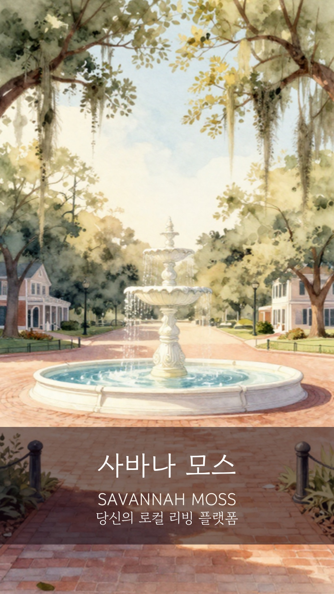

Our Story
낯선 땅에서
찾은 풍경
SavannahMoss가 시작된 이야기
Chapter 1 · 도착
모든 게
낯설었어요
처음 미국에 왔을 때는 기대가 컸어요. 하지만 현실은 조금 달랐어요. 운전면허를 만드는 것부터 은행 계좌를 열고, 자동차를 사고, 병원을 찾고, 집을 구하는 것까지 — 하나하나가 다 낯설고 어려웠어요.
한국인이 많지 않은 지역이다 보니 물어볼 사람도, 우리 지역에 맞는 정보를 얻을 곳도 거의 없었어요.

Chapter 2 · 발견
오크나무에 걸린
스패니쉬 모스
시간이 지나 미국 생활에 조금씩 익숙해질 무렵, 사바나의 오크나무에 걸린 스패니쉬 모스를 보게 됐어요. 그 풍경은 조용했고, 편안했고, 여유로웠어요.
그리고 무엇보다 — 스패니쉬 모스는 나무를 해치지 않고 함께 살아간다는 점이 인상 깊었어요. 그 모습이 미국에서 새로운 삶을 시작하는 우리와 닮아 있다고 느꼈어요.
Chapter 3 · 깨달음
나무를 지배하지 않아요.
해치지도 않아요.
함께 살아가며, 하나의 풍경이 돼요.
우리는 이곳에서 태어난 사람들이 아니지만, 지역사회와 함께 살아가며 서로 도움을 주고받고 성장할 수 있어요. 그 생각에서 SavannahMoss가 시작됐어요.
우리는 지역사회와 경쟁하지 않아요. 함께 성장해요. 새로운 사람들이 지역사회에 자연스럽게 스며들 수 있도록 연결하는 역할을 하고 싶었어요.
Chapter 4 · 시작
그렇게
SavannahMoss를 만들었어요
거창한 계획은 아니었어요. 동네 사람들과 편하게 인사 나누고, 필요한 정보는 찾아볼 수 있고, 물건도 부담 없이 사고팔 수 있는 공간이 있었으면 했을 뿐이에요.
- The Square 동네 소식과 정착에 필요한 정보를 나누는 공간
- Market 가까운 이웃과 부담 없이 물건을 사고파는 공간
- Vines 외부 메신저로 옮기지 않고 앱 안에서 이어가는 대화
- Moss 활동과 신뢰가 스패니쉬 모스처럼 자라나는 프로필
Chapter 5 · 다음 이야기
서배너는
첫 번째 이야기예요
저희의 목표는 크지 않아요. 다만 누군가 새로운 지역에서 “어떻게 해야 하지?” 하고 막막해하는 순간, 가장 먼저 떠올릴 수 있는 도움이 되고 싶어요.
장기적으로는 한국어, 영어, 스페인어를 쓰는 이웃들이 같은 지역 이야기를 각자의 언어로 이해할 수 있는 세상을 꿈꿔요. 언어와 문화의 장벽 없이 서로 연결되는 것 — 그게 저희가 바라보는 방향이에요.
SavannahMoss는 Moss Connection LLC가 만들어가는 첫 번째 이야기입니다.
Stay close
다음 이야기가
궁금하다면.
만들어가는 과정을 인스타그램과 이메일로 계속 나눠드릴게요.